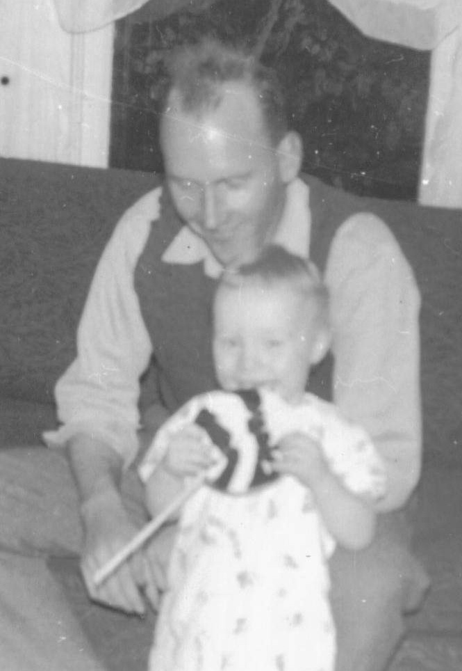
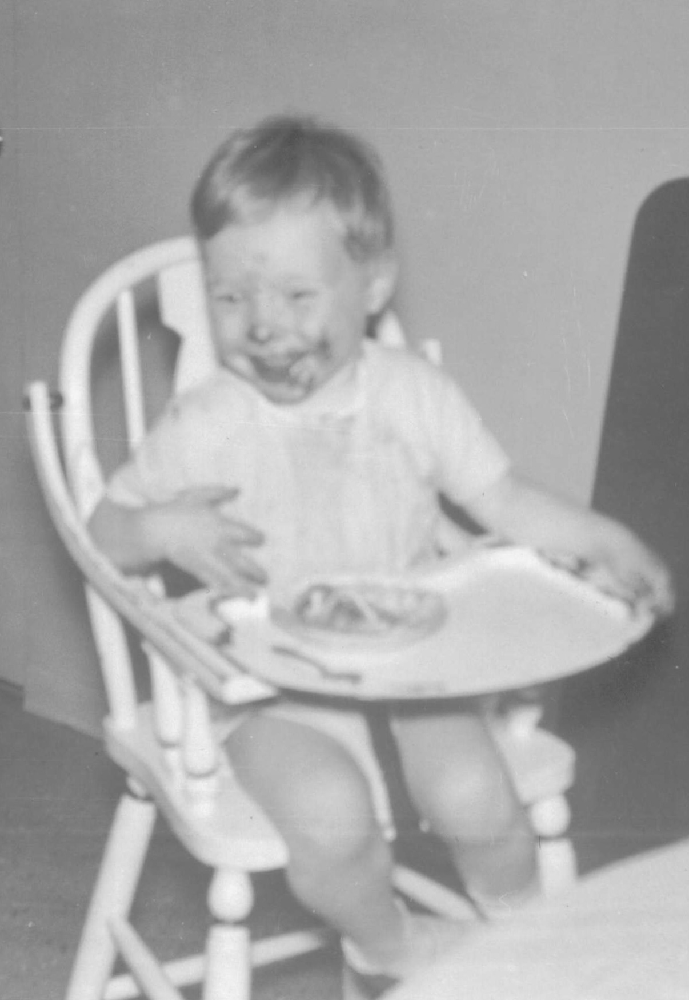
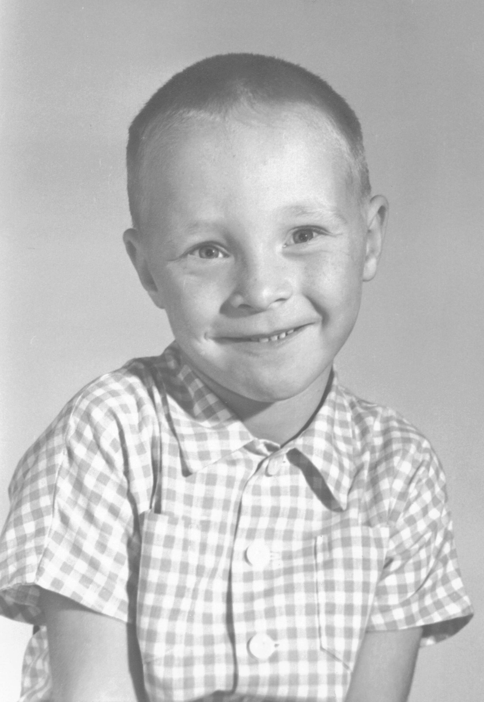
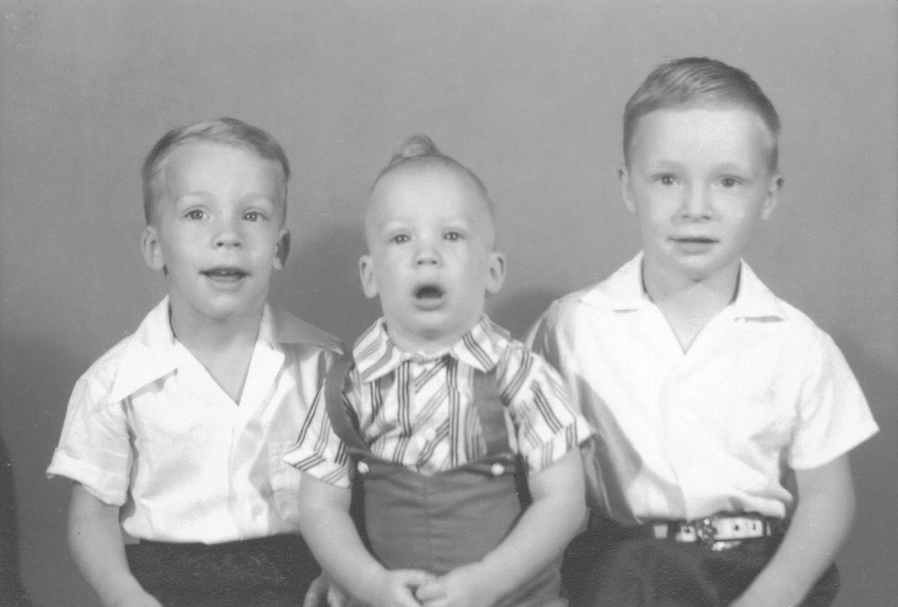
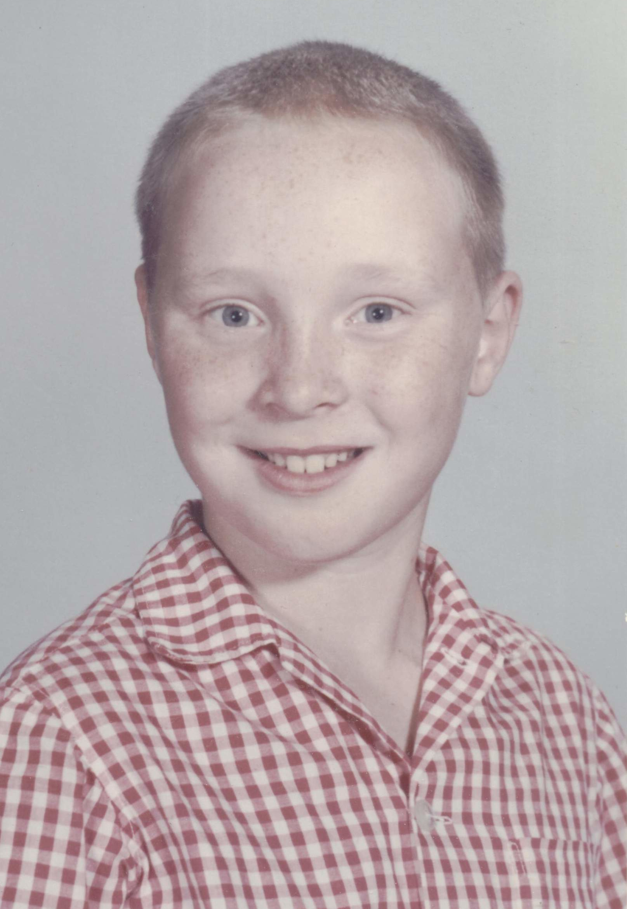
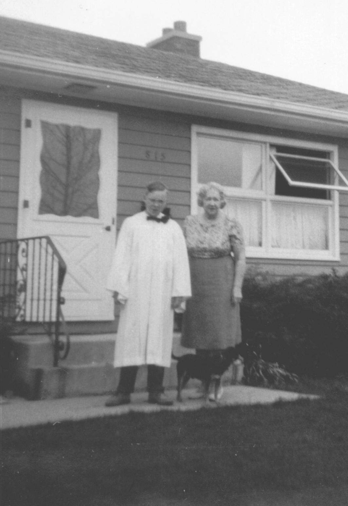
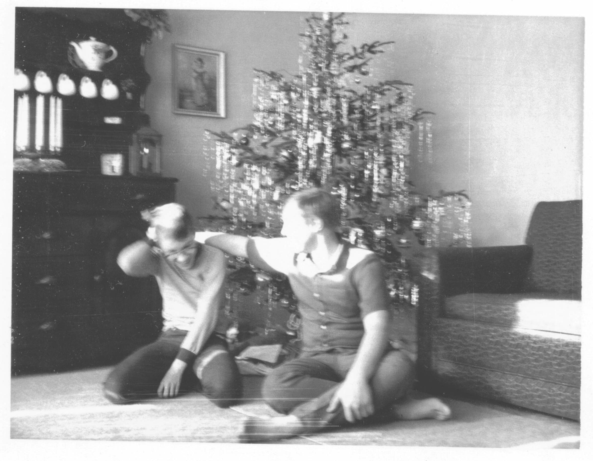
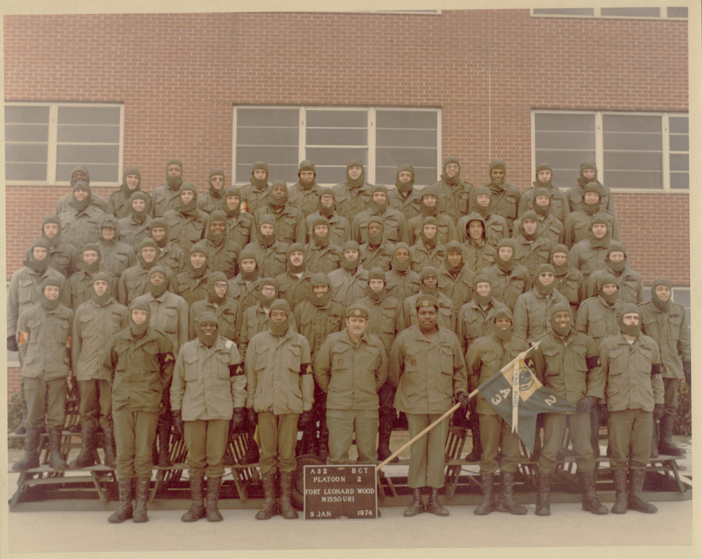
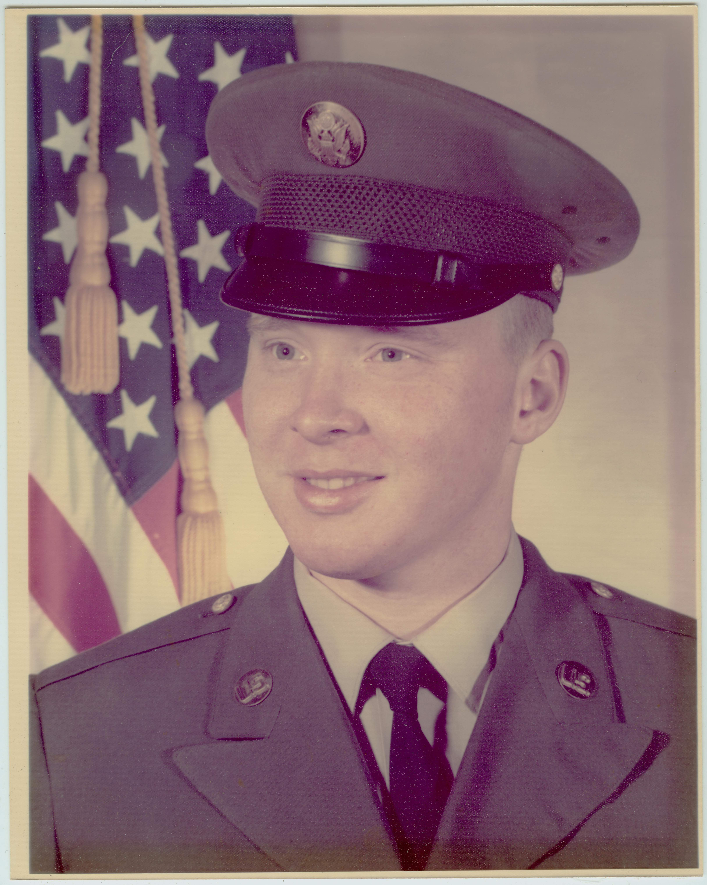
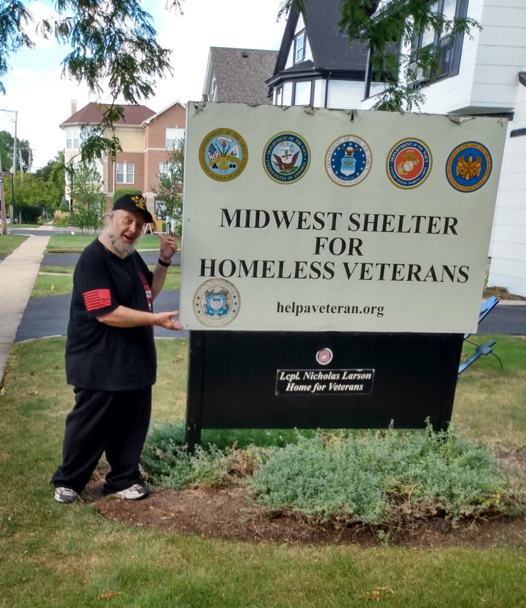

Timeline: Dave's Life in Pictures
This is a chronological, annotated collection of photos from Dave's
life, from his birth in 1953, to his recent passing in 2025.
It's nowhere near finished... still very much a work in progress,
morphing as the content evolves, growing in breadth and depth until
Dave's Celebration of Life gathering expected to be sometime around
April-May of 2026.
In the meantime, send any comments or photos you have to dave@holle.family,
and I will incorporate them into this Timeline. If you have dates
associated with your material, that would be very helpful.
PS If you want a closer look at any photo, just click on it for a
full screen version.

Birth Announcement
October 22, 1953
Dave's Best Day Ever (at that point)
David Henry Holle was born this day.
His first name came from David Seever, Dave's great uncle,
who was born Swiss in the late 1800s. Uncle David came to the
USA early in life, and supported the US World War effort(s) as a
fluent French speaker / interpreter.
Dad and Uncle David had legendary disagreements about politics. But
their conversations were based on mutual respect. That respect moved
Dad to name his first born son after him. (Lesson relevant today!)
Dave's middle name came from his maternal grandfather,
Henry Martin Woaler, who came across the Atlantic from a small town
east of Oslo, Norway. Henry settled first in Canada, then moved south
to the (relatively) warm, southern environs of Illinois.
Henry Woaler passed away in a work accident in 1946, when Mom was
only 18.
I was surprised to see (in this announcement) that Mom and Dad lived
in Aurora, Illinois when Dave was born. Perhaps they were only there
temporarily, while Dad built our first family home in Naperville...
on Webster, I think. Later, Dad built another house on Douglas in
Naperville.
Dave was the first of 4 Holle boys to be born at Copley Hospital in Aurora.
We were all named D Holle: Dave, Dan, Doug, Dean. Our father (Donald)
thought this would be a good idea: hand-me-downs could flow freely, with
no need to change the name tag. This penchant for consistency took
other forms: we were born in 1953, 1955, 1957, and 1959.
Then, in 1964, Barbara came along. Obviously, she was different, at so
many levels. They build Edwards Hospital in Naperville, just for her.
1954-1973
Dave Growing Up, Year by Year
One picture per year, from his first birthday to his
high school graduation. Each year includes a caption with
more detail.
WARNING: There will be a test at the end.

1955: 2nd Birthday.
With Uncle Art (Gangsta!) & Lollipop

April, 1956: Dave at 3.5 Years
Kitchen at 815 Douglas

1958: Kindergarten. Age 5.
Gotta love this photo.

August, 1959: The 3 Stooges
Dan (Age 4), Doug (2), Dave (6)

1963: 5th Grade (Age 10)
Mr. Richardson's Class • Naper School

1964: 6th Grade. Age 11.

1966: Confirmation.
In front of 815 Douglas.
Dave (Age 12.5), Winky(Dog), Grandma Woaler.

1969
Dave's First Job?
This is from Dave's sophomore year in high school, when he was 16. I
am guessing it is from Dave's first job, where he worked at WONC, a
local FM radio station associated with Norh Central College in
Naperville.
I can't remember in detail what he did there... but his boss Russ
was clearly impressed.
If you can't read the note, click on it for a better view. Or just
read my best-guess translation:
Dear Dave, Science genius and Joe Reporter, you hang in there and
keep writing those stories. I don't have to wish you good luck
because you don't need it. We will have fun at the station this
summer so stay alert! --- Your boss, Russ

December, 197?
Ho Ho Holle Family Christmas
Top row: Dan, Dave, Doug. Then there's Santa, and Barb.
I think Santa might be sitting in Dad's easy chair. Coincidence?

December, 1969
Holle Family Christmas
Dan and Dave.
I might write up something here about Holle Family
Christmas traditions... like a Christmas tree in that
corner, every year.
Polished cherry hutch on the left. Blue Boy replica on the
wall. Red sofa on the right. Boys everywhere.

October, 1983
Holle Family + Mutz - Dan
A family photo. Significant here, because it covers a time when
I don't have many photos of Dave.
Mutz AKA Aunt Marge AKA Marge Sanderson was our next-door
neighbour and adopted family member. She was a reasearch biologist at
Argonne National Labs, one of many research labs in our area as we grew
up. Their presence in general, and Marge in particular, added to our focus
on science as a family.
Mutz lived on her own next door, but not really. She lent us her
lawnmower, and we mowed her lawn. She shared produce from her prolific
garden, especially fresh asparagus. She shared photos from her travels to
Mexico, and her magazine subscriptions. We were the family she never had, and
she was the Aunt Marge we never had.

1971-1973
College of DuPage (COD)
Dave pursued a career with computers at COD. There, he met
Darryl Van Nort, who worked in the COD data center.
This became, literally, a lifetime friendship, spanning over
half a century. Their shared interests included not only
computing, but also photography. (Darryl passed away in 2023,
from health issues involving COVID and heart disease.)
The classes in computing were pretty limited back then: the
idea of a degree in "Computer Science" didn't exist yet. Dave
would register for classes, and then the classes wouldn't run
because not enough people signed up for them.
So Dave (possibly with Darryl's help) hacked the registration
system, and enrolled fake students so his courses would run. These
fake students had names like George Washington, Benjamin Franklin,
Thomas Jefferson, etc. You know, your usual sorts of COD students.
Imagine the instructor, nervously addressing a nearly empty classroom
on the first day, calling out names to see who was present...

1973
Corporate Dave?!?
Around 1973, Dave worked a corporate data processing
job at CT Law Technology, which (as the name suggests) provided
automation services for law firms.
By then, Darryl had a job at IBM; I was a senior in high school, with
a part-time job at a Bell Systems subsidiary. All 3 of us worked with
IBM mainframes: Dave's company used an IBM 360/30 ($1.3M in today's
money); I used a 370/145 ($7M in today's money), and Darryl had access
to test machines that were much bigger and more expensive (so was Darryl).
We decided to have a drag race over the weekend, when these machines were
usually idle. The test involved writing all prime numbers in sequence
to a high-speed line printer. We'd see how long each machine could keep
the printer busy before the printer caught up.
To avoid any corporate data security issues, and (frankly) to leave no
fingerprints that would expose our use of expensive billable machine
resources, we did this using a pure binary bootable card deck that used
no IBM operating systems and did not access any disk files, only using
the card reader and only writing to a printer.
I suspect it was the first and only time these 3 machines had ever run
such a program.
The result was predictable. Dave's million-dollar machine printed only
one page before gasping for breath. My $7M machine lasted over a dozen
pages.
Darryl's giant machine, of course, went on and on. Maybe it's still running..
Dave and I were amused and pleased. For us, it was just for fun.
For Darryl, though, it was about winning. And... he had WON!


January, 1974
Join the Army!
When our father was 20 years old, he was working in high tech
(specifically, electronics). Then he heard the call to serve
his country, and joined the US Army.
When Dave was 20 years old, he was also working in high tech
(in his case, computers). Then he also heard the call to serve
his country, and also joined the US Army.
There are many parallels between Dave and Dad's lives, and this
story is just one of them.
(Much more to say here. I just got a whole bunch of pictures of
Dave from this time period from Dean, and it gives me a lot of
material to flesh out this part of Dave's story.)

1979
Fort Knox
For 2 years, methinks.
I was at the University of Illinois, 120 miles from Naperville. Dave, at Fort
Knox, was over 400 miles away, if I recall. We both visited home when we could,
which was more often than one might think.
Then Easter Weekend rolled around, and we crafted a Holle Boys trip around the
south-eastern part of the USA. Maybe 2000 miles. It was crowded and inconvenient...
at times, it violated the laws of various states, but at no point did it violate the
laws of physics. Deep South. Appalachians. On and on.
At one point we were in someplace like... Alabama. In some sort of place like...
Waffle House, or Denny's. It was actually Easter Sunday. They had one of fhose
plastic gizmo's on the table where they slide in deal-of-the-day advertisements.
Dave went to work, and created a custom advertisement that was very convincing,
offering Rabbit Stew, with a convincing looking illustration of a forlorn Easter
Bunny, surrounded by Easter Eggs, looking at you like he was begging for mercy...
featuring a very attractive sales price.
Then we left the advertisement on the table.
I am thinking somebody probably ordered that stew. Even if they didn't, it warms
my heart to think we created an opportunity for them to do so.

1977
"Art" comes after "Army"... in the Dictionary, and Dave's Timeline
Terre Haute, New Hampshire, Cape Cod, Triton Lane, 815 Douglas...
After Fort Knox, Dave rolled up his sleeves and cracked on with
an effort to become a professional cartoonist. This is no small
feat: ask Scott Adams, who (before becoming the most successful
cartoonist of all time) suffered through a period where no sane
person would continue.
Dave went through the same gauntlet, and for him, it just didn't work.
Did he break into the big leagues? Yes. He sold cartoons to major
publications like the Cosmopolitan and the Atlantic. But these "big
deals" were only worth something like $300 apiece for Dave... one-offs,
after many months of sending cartoons and getting rejected.
A very tough time for Dave. And not a sustainable source of income.
A large gallery of Dave's drawings appears here. Maybe highlight a
couple of memorable ones at the top.

2005
We Lost Our Dad
I think it would be fair to say that Dad was the most important
person in Dave's life. Dad supported Dave when he needed it most,
and, perhaps, vice-versa.
They lived together for a long time... often at 815 Douglas (our
family home), but also at other locations, as life unfolded.
For both, service in the US Army was a transformational part of their
lives.
When Dad passed away in 2005, it was devastating for Dave.

2008(???)
Dave Goes To MSHV
When Dad passed away, Dave was devastated. Dad and Dave were deeply
interdependent. Dave found himself in an emotional and financial
downward spiral he could not handle on his own.
After a difficult period, Dave found refuge at the Midwest Shelter for
Homeless Veterans (MSHV). His relationship with MSHV... first, as a
resident, then later, as an employee... helped Dave when he needed it
most, and provided him with a sense of purpose and a fulfilling role
that restored his self-confidence, and allowed him to give back support
to others for the rest of his life.
Here are a few photos, gleaned from Dave's journey with MSHV.
(to be continued)

October, 2025
Duelling Birthdays
Brian's 40th birtday was on 10 October; Dave's 72nd was on 22 October.
Brian, Doug, and Sue went from Minocqua, Wisconsin, to ???, Indiana, to celebrate
Brian's birthday; and managed to catch up with Dave in Wheaton along the way.
Everyone was in good spirits, and (apparently) in good health. While Dave had
a few lingering issues, they appeared to be on the mend.

Late November, 2025
Ending Days
A month and a half later, his condition changed for the worse.
- Thursday, 20 November: Dave did not show up for work, and did not call
in. That combination was unusual. Robert London, a long-time friend and
co-worker, went to check on Dave. He found Dave was not feeling well, but
Dave reassured Robert he would be back in the office in the morning.
- Friday, 21 November: Dave did not show up again. This time, when Robert
checked on Dave, Dave was incoherent. Robert called an ambulance. Dave
arrived at Central DuPage Hospital, in intensive care. Now Dave was responsive
and coherent. There was good reason for optimism, especially since a scan
showed no evidence of strokes or heart failure.
- However, Dave became unresponsive, and went on a ventilator. A
subsequent scan, later on Friday, showed he had suffered a massive stroke on
one side of the brain. There were various signs that he might have been
recovering and beginning to respond again, but for several days no conclusive
indications of recovery presented themselves.
- On xx November, Dave passed away peacefully.
What happened?
From what I've heard, the most likely final pathway was:
- Dave's leukemia, and ongoing chemotherapy, led to
- profound neutropenia, leading to
- Pseudomonas UTI/bacteremia, leading to
- overwhelming sepsis + septic emboli and/or mycotic
aneurysm in the brain, leading to
- massive ischemic and/or hemorrhagic stroke that
developed after the first scan.
Pseudomonas is one of the organisms doctors fear most in
this exact patient population for precisely this reason.
Even with the very best antibiotics and ICU care, once it
reaches that stage the outcome is often unsurvivable.
Goodbye, big brother...
April/May, 2026
Celebrating Dave's Life
Dave's ashes will be interred at the memorial ground at MSHV. There has been a
place reserved for him, beside two friends in life (one being a cat, and another
being a human).
Cremation offers some flexibility in timing of a memorial service. We're thinking
there will be a memorial service at MSHV in Wheaton, Illinois, in April or May of
2026. We'll let you know more closer to the time.
Register your interest in getting a direct notification by writing an email to
dave@holle.family, or by text/WhatsApp message to +44 7852 979851,
If you would like to make a contribution on Dave's behalf, hold onto your hat. I
expect, given the generous support Dave has received from the MSHV, this will
take the form of a contribution to that organisation.